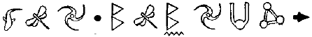
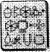

KOBOİ LABORATUARLARININ AŞAĞISI
LEP mekikleri bir su damlası biçimindedirler. İtici güçlerin bulunduğu, kabarık bir altları ve çeliği bile delip geçebilen bir burunları vardır. Tabii ki kahramanlarımız şu an bir LEP mekiğinde değil, büyükelçinin lüks yolculuk gemisindeydiler. Burada konfor hızdan daha önemliydi. Mekiğin burnu bir gnome poposunu andırıyordu. Hantal ve pahalı görünümlüydü. Ve bir yabandomuzu kızartabilecek kadar büyük bir ızgarası vardı.
“Yani demek istediğin, bu çatlak birkaç dakikalığına açılacak ve bu sürede içinden geçmem gerekiyor. Bütün plan bu mu yani?” dedi Holly.
“Elimizdeki en iyi plan bu,” dedi Root, somurtarak.
“En azından ezildiğimiz sırada yumuşak koltuklarımızın içinde oturuyor olacağız. Bu alet, üç bacaklı bir su aygırı gibi idare ediliyor.”
“Nereden bilebilirdim ki?” diye homurdandı Root. “Bunun sıradan bir gezi olması gerekiyordu. Bu mekiğin harika bir müzik seti var.”
Kâhya elini kaldırdı. “Dinleyin. Bu ses de ne?” Dinlediler. Ses aşağılarından geliyordu, sanki bir dev boğazını temizliyor gibiydi.
Holly orta kameraları gözden geçirdi.
Alev, diye belirtti. “Koca aptal. Her an kuyruk tüylerimizi kavurabilir.”
Önlerindeki kaya sürekli genleşip kasılırken, çatırtılar ve iniltiler yükseldi. Kayanın içinde, siyah dişlerle bezeli ağızları andıran çatlaklar açıldı.
“İşte bu. Hadi gidelim,” diye acele etti Mulch. “Bu çatlak hemen kapanacak, hatta kokuşmuş bir solucandan bile daha hızlı —”
“Henüz yeterince yer yok,” diye tersledi Holly. “Bu bir mekik, çalıntı kanatlarla uçan bir cüce değil.”
Mulch aşağılanmayacak kadar çok korkmuştu. “Devam et. Biz ilerledikçe genişleyecek.”
Holly genellikle Root’un izin vermesini beklerdi. Ama bu onun alanıydı. Mekik idaresi konusunda hiç kimse Yüzbaşı Holly Short’la tartışamazdı.
Yarık titreyerek bir metre daha açıldı.
Holly dişlerini sıktı. “Kulaklarınıza sahip olun,” dedi hızı sonuna kadar arttırarak.
Mekiğin içindekiler koltuklarının kenarlarını sıkıca kavradılar. Gözlerini kapatanlar oldu. Ama Artemis kapatamadı. Sadece kleptoman bir cücenin çatlağın öbür tarafında olan bir şeyle ilgili sözüne güvenerek, bilinmeyen bir tünelin içinde akıl almaz bir hızla uçmanın korkunç keyifli bir yanı vardı.
Holly tüm dikkatini aygıtlara verdi. Mekiğin dış kameraları ve algılayıcıları çeşitli ekranlarla hoparlörlere bilgi aktarıyordu. Sonarlar çıldırmış gibiydi, sesleri sürekli bir iniltiyi andırıyordu. Sabit halojen ışıklar monitörlere korkunç görüntüler yansıtıyordu ve lazer radarı siyah bir ekranın üzerine üç boyutlu, yeşil bir çizgi çizmişti. Tabii bir de kuvars ön cam vardı. Ama tüm bu kaya tozları ve daha büyük enkaz parçaları yüzünden, çıplak gözle bir şey görebilmek olanaksızdı.
“Isı yükseliyor,” diye mırıldandı Holly, dikiz ekranına bakarak. Turuncu renkli bir magma dalgası çatlağın önünden geçerek, tünelin içine doğru akmıştı.
Ümitsiz bir yarışa girmişlerdi. Yarık arkalarından kapanıyor ve mekiğin pruva yönünde giderek açılıyordu. Gürültü korkunçtu. Sanki bir hava kabarcığın içinde gök gürlüyordu.
Mulch kulaklarını tıkadı. “Bir dahaki sefere Howler Tepesini seçeceğim.”
“Sessiz ol, mahkûm,” diye hırladı Root. “Tüm bunlar senin başının altından çıktı.”
Mekiğin ön camına kıvılcımlar fırlatan bir gıcırtıyla tartışmaları bölündü.
“Affedersiniz,” diye özür diledi Yüzbaşı Short. Bu giden iletişim donanımımızdı.”
Holly mekiği yan yatırıp iki oynak tabaka arasından kil payı geçmeyi başardı. Magmanın sıcaklığı kayayı kaplamış ve tabakaları birbirlerine yaklaştırmıştı. Tabakalar birbirine hızla çarpınca, mekiğin arkasından çentikli bir parça dev bir alkış gibi koptu. Kâhya kendini güvende hissetmek için Sig Sauer’ını doğrulttu.
Sonra yarığın içinden geçip bir mağaranın içine yuvarlanarak, üç kocaman titanyum kazık doğru ilerlediler. “İşte,” diye soludu Mulch. “Temel kazıkları.”
Holly gözlerini devirdi. “Hadi ya,” diye inledi, iniş kıskaçlarını ateşleyerek.
Mulch bir grafik daha çizmişti. Bu çizdiği, kıvrımlı bir yılanı andırıyordu.
“Eline kalem almış bir geri zekâlı tarafından yönetiliyoruz,” dedi Root, aldatıcı bir sakinlikle.
“Seni buraya kadar getirdim, değil mi Julius?” dedi Mulch, surat asarak.
Holly son kaynak suyu şişesini de bitirmek üzereydi. Üçte birini başından aşağı dökmüştü.
“Sakın surat asayım deme, cüce,” dedi. “Görebildiğim kadarıyla, hiçbir çıkış yolumuz ve iletişimimiz olmadan, Dünyanın merkezinde sıkışıp kalmış durumdayız.”
Mulch geri adım attı. “Uçuştan sonra biraz gergin olduğunuzun farkındayım. Şimdi hepimiz biraz sakinleşelim, olur mu?”
Hiç kimse fazla sakin görünmüyordu. Bu çetin sınav Artemis’i bile sarsmış gibiydi. Kâhya, Sig Sauer’ını hâlâ elinden bırakmamıştı.
“Zoru başardık. Artık temellerdeyiz. Tek yol yukarısı. “Ah, gerçekten mi, mahkûm?” dedi Root. “Peki, yukarı ne şekilde gitmemizi öneriyorsun?”
Mulch buzdolabından bir havuç alıp grafiğine doğru salladı. “Burada gördüğünüz...”
“Bir yılan mı?”
“Hayır, Julius. Temel kazıklarından biri.”
“Som titanyumdan temel kazıklan, güçlü taş yataklarına mı saplanmış yani?”
“Kesinlikle. Çok sağlam olmayan bir tanesinin dışında.”
Artemis başını salladı. “Ben de öyle düşünmüştüm. Bu işte senin bir parmağın var, değil mi, Mulch?
Mulch pişman görünmüyordu. “İnşaat kurallarını bilirsiniz. Som titanyum kazıklar mı? Bunların ne kadar pahalı oldukları hakkında bir fikriniz var mı? Fiyat tahminimizin çok üzerindeydi. Bu yüzden kuzenim Nord’la ben titanyum işini unutmaya karar verdik.”
“Ama bu sütunları bir şeyle doldurmanız gerekiyordu,” diye sözünü kesti Yarbay. “Koboi incelemeler yapacaktı.”
Mulch suçluluk içinde başını salladı.
“Birkaç gün için, lağım borularını sütunlara bağladık. Tarama sonuçları temiz çıktı.”
Holly boğazının düğümlendiğini hissetti. “Lağım. Yani diyorsun ki...”
“Hayır. Artık değil. Bu yüz yıl öncesinde kaldı, artık yalnızca kil var. Üstelik çok iyi bir kil.”
Root’un yüzünde koca bir su kazanını kaynatabilirdiniz.
“Yirmi metre... gübreye mi tırmanmamızı bekliyorsun?
Cüce omuz silkti. “Hey, umurumda mı sanıyorsun? İstersen sonsuza kadar burada kal, ben bacaya çıkıyorum.” Artemis olayın yönünün aniden değişmesinden hoşlanmamıştı. Koşmak, zıplamak, yaralanmak, tamam da. Peki ya gübre? “Planın bu mu yani?” diye mırıldanmayı başardı.
“Sorun nedir, Çamur Çocuk?” diye sırıttı Mulch. “Ellerini pisliğe mi bulaştırmaktan korkuyorsun?”
Bunu mecazi anlamda söylemişti, Artemis farkındaydı. Ama yine de doğruydu. Narin parmaklarına baktı. Daha dün sabaha kadar bunlar manikürlü tırnaklara sahip, piyanist elleriydi. Bugün ise bir inşaat işçisinin elleri olabilirlerdi.
Holly, Artemis’in omzuna vurdu. “Pekala,” dedi. “Başlayalım. Yeraltı Birimini kurtarır kurtarmaz, sıra babana gelecek.”
Holly, Artemis’in yüzünde bir değişiklik fark etti. Sanki hatları nasıl yerleşeceklerinden emin değillermiş gibiydi. Holly durup ona ne dediğini hatırlamaya çalıştı. Ona göre söylediği, sıradan bir cesaret sözüydü, bir memurun her gün söylediği türden bir şey. Ama anlaşılan Artemis takımın bir parçasıymış gibi davranmaya alışık değildi.
“İçten davranmaya çalıştığımı sanma sakın. Bir söz verdim ve sözümde duracağım.”
Artemis yanıt vermemeye karar verdi. Bugün için yeterince terslenmişti zaten.
Katlanır bir merdivenin yardımıyla mekikten indiler.
Artemis yüzeye çıkıp Mulch'la kuzeninin bir asır önce burada bırakmış oldukları sivri uçlu taşların ve inşaat kalıntılarının arasından kendine yol açtı. Fosforlu kayalar mağarayı parıldayan yıldızlar gibi aydınlatıyordu.
“Burası bir yerbilim harikası,” diye bağırdı Artemis “Bu derinlikteki basıncın bizi ezmesi gerekirdi, oysa ezmiyor.” Paslı bir boya tenekesinin içinde filizlenen bir mantarı incelemek için diz çöktü. “Yaşam belirtisi bile var.”
Mulch iki kayanın arasından bir çekicin kalıntılarını çekip çıkarttı.
“İşte, tam burada olması gerekiyor. Patlayıcı konusunda biraz aşırıya kaçıp bu kazıklar için kuyuları havaya uçurduk. Enkazın bir bölümü... buralara dökülmüş olmalı.”
Holly dehşet içindeydi. Hava kirliliği Peri Halkının nefret ettiği bir şeydi.
“Burada o kadar çok yasaya karşı geldin ki Mulch, onları sayacak kadar parmağım bile yok. İki günlük avansını alınca hızlı hareket etsen iyi olur, çünkü peşindeki ben olacağım.”
“İşte geldik,” dedi Mulch, tehdidi duymazdan gelerek. Onun kadar çok tehdit edilince, bir yerde sonra artık umursamıyordunuz.
Kazıklardan birinde bir delik açılmıştı. Mulch kenarlarını sevgiyle okşadı.
“Lazer elmas kesicisi. Küçük nükleer bir pil. Bu bebek her şeyi kesebilir.”
“Bu kesiciyi ben de hatırlıyorum,” dedi Root. “Bir keresinde, onunla başımı uçuracaktın neredeyse.”
Mulch iç geçirdi. “Güzel günlerdi, değil mi Julius?” Root’un yanıtı Mulch’ın poposuna hızlı bir tekme savurmak oldu. “Daha az konuşup daha çok çamur ye, mahkûm.”
Holly elini deliğe uzattı. “Hava akımları. Şehrin basınç alanı yıllar boyunca bu mağaranın içindeki havayı dengelemiş olmalı. Şu ah vatos balığı gibi yamyassı olmayışımız bu yüzden.”
“Anlıyorum,” dediler Kâhya’yla Root bir ağızdan. Alın size listeye ekleyecek bir yalan daha.
Mulch poposundaki kapağı açtı.
“Tepeye kadar tünel kazıp sizi orada bekleyeceğim. Enkazı olabildiğince temizlemeye çalışın. Hava boşluğunu tıkamamak için geri dönüştürülmüş kili çevreye saçacağım.” Artemis inledi. Mulch’ın geri dönüşümleri arasında sürünerek ilerlemek düşüncesi dayanılmazdı. Devam etmesini sağlayan, yalnızca babasının hayaliydi.
Mulch hava boşluğuna adım attı. “Geri çekilin,” diye uyardı, çenesini salarken.
Kâhya hızlı hareket etti -bir kez daha cüce gazıyla mıhlanmaya niyeti yoktu.
Mulch titanyum sütunun içine yarı beline kadar daldı. Birkaç saniye sonra da tamamen yok oldu. Baca içinden gelen, garip ve mide bulandırıcı seslerle titremeye başladı. Kil parçalan metal duvarlara çarpıyordu. Delikten aşağı sürekli olarak yoğun bir hava akımı ve enkaz parçalan yağıyordu.
“Şaşırtıcı,” diye soludu Artemis. “Bundan on taneye sahip olsaydım, neler yapabilirdim kim bilir? Knox Kalesi çocuk oyuncağı olurdu.”
“Aklından bile geçirme,” diye uyardı Root. Sonra Kâhya’ya döndü. “Elimizde ne var?”
Hizmetkâr silahını doğrultu. “Şarjöründe on iki kurşun olan, bir Sig Sauer tabancası. Hepsi bu. Onu taşıyabilecek tek kişi ben olduğuma göre, silahı ben alacağım. Siz ikiniz yoldan ne toplayabilirseniz alın.”
“Peki ya ben?” diye sordu Artemis, gelecek olan yanıtı bildiği halde.
Kâhya efendisinin gözlerinin içine baktı. “Senin burada kalmanı istiyorum. Bu askeri bir harekât. Tek yapabileceğin, boş yere öldürülmek olur.”
“Ama...”
“Benim görevim seni korumak, Artemis ve burası, hiç kuşkusuz gezegenin en güvenli yeri.”
Artemis tartışmadı. Aslında bu gerçekler onun da aklına gelmişti. Bazen dahi olmak insana sıkıntı veriyordu. “Pekala, Kâhya. Burada kalacağım. Ama...”
Kâhya’nı gözleri kısıldı. “Ama ne?”
Artemis tehlikeli bir gülücük attı. “Ama aklıma bir fikir gelirse çıkarım.”
POLİS PLAZA
Polis Plaza’da durum ümitsizdi. Yüzbaşı Kelp elinde kalan güçleri devrik çalışma masalarının arkasında, daire şeklinde toplamıştı. Goblinler kapıdan rasgele ateş ediyorlardı ve büyücülerin tek bir damla büyüleri bile kalmamıştı. Şimdiden sonra tüm yaralananlar, yaralı kalacaktı.
Konsey üyeleri askerlerden oluşan bir duvarın arkasında birbirlerine sokulmuş duruyorlardı. Kendisine elektrikli tüfeklerden birinin verilmesini isteyen filo komutanı Yarbay Vinyâya dışında hepsi. Şimdiye kadar hedefi hiç ıskalamamıştı.
Teknisyenler masalarının arkasına çömelmiş, Harekât odasına girebilmek için kitapta yazan her türlü şifreyi deniyorlardı. Bela bu konuda pek ümitli değildi. Foaly bir kapıyı kilitlemişse eğer, o kapı kilitli kalırdı.
Bu arada, Foaly’nin tek yapabildiği, odanın içinde öfke içinde yumruklar savurmaktı. Cudgeon’ın acımasızlığı yüzünden, Foaly çatış mayi kurşun geçirmez camların ardından izlemek zorundaydı.
Ümit yokmuş gibi görünüyordu. Julius’la Holly mesajı almış olsalar bile, artık bir şey yapmak için çok geçti. Foaly’nin dili damağına yapışmıştı. Herkes onu terk etmişti. Bilgisayarı, zihni, hazırcevaplığı.
KOBOİ LABORATUARLARININ AŞAĞISI
Kâhya’nın başına ıslak bir şey çarptı.
“Bu da neydi?” diye fısıldadı, en arkada duran Holly’ye.
“Sorma,” diye vırakladı Yüzbaşı Short. Miğferindeki filtrelere karşın iğrenç kokuyu duyabiliyordu.
Sütunun içindekiler bir asır boyunca mayalanmıştı ve kokuları ilk günkü kadar zehirleyiciydi, belki de daha kötü. En azından bunları yemek zorunda değilim, diye düşündü koruma.
Root hazırdı. Miğferinin ışıkları karanlığın içinde göz alıyordu. Titanyum dolguya sıkıca kenetlenebilmesi için tasarlanmış olan, düzgün oyuklu kazık, kırk derecelik bir açı oluşturuyordu.
Mulch borunun içindekileri parçalamakla çok iyi bir iş çıkarmıştı. Ama geri dönüştürülen kilin bir yere gitmesi gerekiyordu. Hakkını yememek gerekirdi, fazla toprak yığını birikmesin diye, ağzına doldurduğu tüm kili yutmuştu.
Baskın ekibinin elemanları ne yaptıklarını düşünmemeye çalışarak canlarını dişlerine takmış, mücadele ediyorlardı. Cüceye yetiştiklerinde Mulch yüzünde acı dolu bir ifadeyle bir duvara sıkıca tutunmuştu.
“Ne oldu Mulch?” diye sordu Root, sesinde hafif bir kaygıyla.
“Yukağğğğııı çıkın,” diye inledi Mulch. “Hemeeeen yukağğğğıı çıkın.”
Yaklaşmakta olan tehlikenin farkına varan Root’un gözleri açıldı. “Yukarı!” diye fısıldadı. “Herkes yukarı!”
Hepsi bir anda cücenin yukarısındaki daracık delikten tırmandılar. Tam zamanında davranmışlardı. Mulch rahatlayıp bir. sirk çadırını havaya uçurabilecek güçte bir gaz çıkardı. Sonra çenesini yerine taktı.
“Böylesi daha iyi,” diye iç geçirdi Mulch. “Toprağın içinde çok hava var. Şimdi zahmet olmazsa, şu ışını gözümün önünden çeker misiniz? Işığa ne denli duyarlı olduğumu biliyorsunuz.”
Yarbay kızılötesi ışınları kullanmak zorunda kaldı. “Pekala, şimdi hazır yukarıdayken, dışarı nasıl çıkacağız? Hatırladığım kadarıyla kesicini yanında getirmedin.”
Cüce sırıttı. “Sorun değil. İyi bir hırsız, her zaman için bir geri dönüş ziyareti planlar. Bunu görüyor musun?” Mulch borunun geri kalanıyla arasında hiçbir fark olmayan bir titanyum bölgesini işaret ediyordu. “Bunu geçen defa yamadım. Esnek bir bileşim.”
Root gülümsemesine engel olamadı. “Ne kurnaz bir şeytansın sen. Seni nasıl yakalayabildik acaba?”
“Şans,” diye yanıt verdi cüce, borunun bir bölümünü dirseğiyle iterek. İçinden geniş bir daire fırlayıp yüz yıllık bir deliği ortaya çıkardı. “Koboi Laboratuarlarına hoş geldiniz.” Loş bir koridora doğru güçlükle tırmandılar. Duvarların kenarlarında istiflenmiş, yüklü uçan el arabaları vardı. İnce uzun ışıklar koridorları yukarıdan en az aydınlanacak biçimde ayarlanmıştı.
“Burayı biliyorum,” diye belirtti Root. “Buraya daha önce özel silahların izinlerini denetlemek için gelmiştim. “Bilgisayar merkezinden iki koridor uzaktayız. Başarabildiğimiz için gerçekten şanslı sayılırız.”
“Peki ya DNA şok topları?” diye sordu Kâhya.
“İnce iş,” diye itiraf etti Yarbay. “Toplara kayıtlı bilgiler seni tanımazsa, öldün demektir. Bir cinsi tamamen reddetmeye programlanmış olabilirler.”
“İnce iş,” diye onayladı hizmetkâr.
“Şu an için etkin olmadıklarına bahse girerim,” diye sürdürdü konuşmasını Root. “Birincisi, burası goblin kaynıyorsa onların ön kapıdan içeri girdiklerini pek sanmam. İkincisi, Foaly bu küçük ayaklanmadan sorumlu tutuluyorsa, Koboi de tıpkı LEP gibi silahsızmış görünmek isteyecektir.”
“Strateji mi?” diye sordu Kâhya.
“Sayılmaz,” diye itiraf etti Yarbay. “Bu köşeden döner dönmez kameralara yakalanacağız. Bu yüzden, koridordan elinizden geldiğince hızla geçin ve önünüze çıkan her şeyi devirin. Silahlıysa, silahına el koyun. Mulch, sen burada kalıp tüneli genişlet, dışarı çok hızlı çıkmamız gerekebilir. Hazır mısınız?”
Holly elini uzattı. “Beyler, sizinle tanışmak bir zevkti.”
Yarbay ve hizmetkâr sırayla onunla tokalaştılar. Aynen.”
İki yüz gobline karşı, hemen hemen silahsız üç kahraman, koridora doğru ilerlediler. Sıkı bir dövüş olacaktı.
ÖZEL ODA, KOBOİ LABORATUARLARI
“Davetsiz konuklar,” diye cıyakladı Opal Koboi, sevinç içinde. “Binanın içerisinde.”
Cudgeon plazma gözetleme ekranının önüne geçti. “Bu kesinlikle Julius. Şaşırtıcı. Anlaşılan vurucu timiniz abartıyormuş, General Sputa.”
Sputa öfke içinde göz yuvarını yaladı. Teğmen Nyle’ın derisini gömlek değiştirme mevsiminden önce yüzecekti.
Cudgeon, Opal in kulağına fısıldadı. “DNA toplarını harekete geçirebilir miyiz?”
Pixie başını salladı. “Hemen değil. Goblin DNA’sını geri çevirmek üzere yeniden programlandılar. Bu birkaç dakika sürer.”
Cudgeon dört goblin generaline döndü. “Arkadan saldıracak zırhlı bir birlik hazırlayın, bir tane de yandan kuşatacak. Onları kapıda tuzağa düşürebiliriz. Dışarı çıkışlarını engelleriz.”
Cudgeon pür dikkat plazma ekrana baktı. “Bu, planladığımdan da iyi. Şimdi, eski dostum Julius, seni küçük düşürme sırası bende.”
Artemis derin düşüncelere dalmıştı. Şimdi yoğunlaşma zamanıydı. Bir kayanın üzerinde bağdaş kurmuş, Kuzey Kutbuna döndüklerinde yararlanabileceği çeşitli kurtarma stratejilerini gözden geçiriyordu. Mafya, eğer Artemis’den önce oraya gelmeyi başarırsa, o noktadan sonra sadece tek bir plan işe yarayabilirdi. Ve bu çok tehlikeli bir plandı. Artemis zihninin daha derinlerinde bir şeyler aradı. Başka bir yolu olmalıydı.
Titanyum sütundan gelen müziğe benzer bir ses dikkatini dağıttı. Bir fagottan yükselen sürekli bir sesi andırıyordu. Cüce gazı, diye düşündü. Sütunun ses dağılımı iyiydi.
Bir beyin dalgasına ihtiyacı vardı. Saplandığı bu çamurdan kurtulmasını sağlayıp gününü gün edecek berrak bir düşünceye.
Sekiz dakika sonra, düşünceleri bir kez daha bölündü. Bu kez gaz değildi. Bir yardım çağrısıydı. Mulch’ın başı dertteydi ve acı içinde kıvranıyordu.
Artemis, Kâhyaya konuyla ilgilenmesini söylemeye hazırlanırken, korumanın orada olmadığını fark etti. Yeraltı Teşkilatını kurtarmak için yanından ayrılmıştı. İş başa düşmüştü.
Başını sütunun içine doğru uzattı. Kanal eski bir çizmenin içi kadar karanlık ve iki kat daha keskin kokuluydu. Artemis en çok gereksinim duyacağı şeyin bir LEP miğferi olduğuna karar verdi. Derhal mekikten yedek bir miğfer bulup kısa bir deneme süresinden sonra ışıklarını ve kilitlerini çalıştırmayı başardı.
“Mulch? Yukarıda mısın?”
Yanıt yoktu.-Bir tuzak olabilir miydi? Onun, koca dahi Artemis Fowl’un tarihteki en eski oyuna gelmesi olası mıydı? Kesinlikle olası, diye karar verdi. Ama yine de bu küçük tüylü yaratığın yaşamını tehlike sokmaya cesaret edemedi. Farklı düşüncelerde olsalar da Los Angeles’tan beri, Bay Diggums’la aralarında bir bağ oluşmuştu. Artemis ürperdi. Annesi sağlığına kavuştuğundan beri, bu gittikçe daha sık başına geliyordu.
Artemis borunun içine tırmanıp yukarıdaki ışık halkasına doğru yolculuğuna başladı. Koku dayanılmazdı. Ayakkabıları mahvolmuştu ve St Bartleby’s ceketini artık hiç bir kuru temizleyici kurtaramazdı. Mulch gerçekten acı çekiyor olsa iyi olurdu.
Artemis girişe vardığında, Mulch’ı yerde acı içinde kıvranırken buldu. Çektiği acıdan yüzü buruşmuştu.
“Ne oldu?” diye sordu, miğferini çıkartıp cücenin yanında diz çökerek.
“Bağırsaklarımda bir tıkanma var,” diye homurdandı cüce. Sakalından aşağı ter boşalıyordu. “Sert bir şey yutmuş olmalıyım. Aşağı indiremiyorum.”
“Ne yapabilirim?” diye sordu Artemis, olası yanıtlardan korktuğu halde.
“Sol çizmem. Çıkart onu.”
“Çizmen mi? Çizme mi dedin?”
“Evet,” diye inledi cüce, acı tüm göğsüne yayılmıştı. “Çıkart onu!”
Artemis rahat bir soluk almadan edemedi. Çok daha beterinden korkmuştu. Cücenin bacağını omzuna koyup uzun çizmesini çekti.
“Güzel çizme,” dedi.
“Rodeo Drive,” diye güçlükle soludu Mulch. “İzninle.”
“Affedersin.”
Çizme çıkınca, ortaya delikler ve yamalarla dolu, bir modacının elinden çıkmadığı açıkça belli olan bir çorap çıktı.
“Küçük parmak,” dedi Mulch, gözleri acıdan kısılarak.
“Küçük parmağa ne olmuş?”
“Eklem yerini sık. Sertçe.”
Eklemin sıkılması tepki bilimle ilgili bir şey olsa gerekti. Ayağın her bölümü, bedenin belirli bir bölgesinin karşılığı sayılırdı. Bir anlamda bedenin klavyesiymiş gibiydi. Bu yüzyıllardır Doğu ülkelerinde uygulanana bir bilim dalıydı.
“Pekala. Madem ısrar ediyorsun.”
Artemis işaret parmağıyla başparmağını, Mulch’ın tüylü ayak parmağının üzerine koydu. Hayal görüyor olabilirdi ama tüyler sanki ona yol vermek istercesine iki yana ayrılıyorlardı.
“Sıksana,” diye güçlükle soludu cüce. “Neden sıkmıyorsun?”
Artemis sıkmıyordu çünkü alnının ortasındaki lazer namluya bakmaktan gözleri şaşı olmuştu.
Silahı tutan Teğmen Nyle, bu kadar şanslı olabileceğine inanamıyordu. Tek başına, iki davetsiz misafiri ele geçirmiş, üstelik de gizli deliğin yerini bulmuştu. Savaştan kaçmak için arka planda kalmanın işe yaramadığını kim söyleyebilirdi? Bu, onun için olağanüstü bir dönüm noktası olacaktı. Daha üçüncü kez deri değiştirmeden, albay olacaktı.
“Ayağa kalk,” diye emretti, burnundan mavi alevler püskürterek. Sesi çeviriciden geldiği halde, bir sürüngene ait olduğu anlaşılıyordu.
Artemis, Mulch’ın bacağını da kendisiyle birlikte kaldırarak yavaşça ayağa kalktı. Cücenin popo kapağı açıldı.
“Nesi var bunu?” diye sordu Nyle, daha yakından bakmak için eğilerek.
“Yediği bir şey dokunmuş olmalı,” dedi Artemis ve Mulch’ın eklemini sıktı.
Meydana gelen patlama goblinin ayaklarını yerden kesip koridora yuvarlanmasına neden oldu Bu, her gün göremeyeceğiniz türden bir manzaraydı.
Mulch ayağa kalktı.
“Teşekkürler, evlat. Bir an için öleceğimi düşünmüştüm. Sert bir şey yutmuş olmalıyım. Granit, belki de elmas.” Artemis başını salladı. Konuşmaya hazır değildi.
“Şu goblinler çok aptal. Bakışını gördün mü?” Artemis başını salladı. Hâlâ hazır değildi.
“Gidip yakından bakmak ister misin?”
Mulch’ın bu patavatsız şakası, Artemis’in sersemliğini üzerinden atmasını sağlamıştı. “Şu goblin. Tek başına olduğunu sanmam.”
Mulch popo kapağını kapattı. “Hayır. Daha bir an önce, bir birlik dolusu goblin önümden geçti. Bu adam eylemden kaçınmaya çalışmış olmalı. Tam goblinlere göre bir hareket.”
Artemis şakaklarını ovuşturdu. Arkadaşlarına yardım etmek için yapılacak bir şeyler olmalıydı. Tanrı aşkına, o Avrupa’nın en yüksek IQ’suna sahipti.
“Mulch, sana önemli bir soru sormam gerek.” “Sanırım, sana bir yanıt borçluyum, ne de olsa hayatımı kurtardın”
Artemis kolunu cücenin omzuna sardı, “Koboi Laboratuarlarına nasıl girdiğini biliyorum. Ama aynı yoldan geri dönmüş olamazsın, alevler seni yutardı. Peki çıkmayı nasıl başardın?”
Mulch sırıttı. “Basit. Alarmı devreye soktum, sonra da gelmiş olduğum LEP üniformasıyla dışarı çıktım.”
Artemis kaşlarım çattı. “Bu işe yaramaz, başka bir yolu olmalı. Olmak zorunda.”
Açıkça görülüyordu ki DNA topları çalışır durumda değillerdi. Root tam olumlu düşünmeye başlayacağı sırada, yaklaşmakta olan çizme seslerini duydu.
“D’Arvit. Gümbür gümbür geliyorlar. Siz ikiniz yola devam edin. Ben elimden geldiğince onları oyalamaya çalışacağım.”
“Hayır, Yarbay,” dedi Kâhya. “Kusura bakmayın ama tek bir silahımız var ve onunla, sizden çok daha fazla isabetli atış yapabilirim. Pusuya yatıp onları köşeden döner dönmez sıkıştıracağım. Siz kapıyı açık tutmaya çalışın.” Holly karşı çıkmak için ağzını açtı. Ama bu boyda bir adamla kim tartışabilirdi ki?
“Pekala. İyi şanslar. Yaralanırsan, ben geri dönünceye kadar olabildiğince hareketsiz yatmaya çalış. Dört dakika, unutma.”
Kâhya başıyla onayladı. “Unutmam.”
“Ve Kâhya?”
“Evet, Yüzbaşı?”
“Bu geçen yılki küçük anlaşmazlık hakkında. Hani Artemis’le sen, beni kaçırdığınızda.”
Kâhya tavana baktı. Aslında ayakkabılarına bakacaktı ama Holly görüş açısının içinde kalırdı. “Evet, şey. Bu konu hakkında seninle konuşmak...”
“Unut gitsin. Artık olay kapandı.”
“Holly, kıpırda,” diye emretti Root. “Kâhya, sen de fazla yaklaşmalarına izin verme.”
Kâhya parmaklarını silahın biçimli kabzasına sardı. Silahlı bir ayıyı andırıyordu. “Yaklaşmasalar daha iyi ederler. Kendi açılarından.”
Artemis uçan bir el arabasına atlayıp koridor boyunca uzanan üst geçitlerden birine daldı.
“Bu boru, tavanı boydan boya kat ediyormuş gibi görünüyor. Nedir bu, bir havalandırma sistemi mi?”
Mulch burnundan soludu. “Keşke. İçinde DNA topları için yedek plazma var.”
“Peki, öyleyse neden bu yolu seçmedin?”
“Çünkü her plazma damlasında, bir trollü kızartmaya yetecek kadar patlayıcı var da ondan.”
Artemis avucunu metalin üzerine koydu. “Peki ya toplar çalışmaz durumda olduğunda?”
“Toplar devre dışı bırakıldıklarında, plazma yalnızca radyoaktif bir artığa dönüşür,”
“Radyoaktif mi?”
Mulch düşünceliydi, sakalını çekiştirdi. “Aslında Julius, toplara kapatılmış gözüyle bakıyor.”
“Emin olmanın bir yolu var mı?”
“Bu açılmayan kapağı açabiliriz.” Mulch parmaklarını kavisli yüzeyin üzerinde gezdirdi. “Ahh, şuraya bak. Küçük bir anahtar deliği. Topların bakımını yapmak için kullanılıyor olmalı. Plazmanın bile arada sırada yeniden doldurulması gerekir.” Mulch metalin içindeki küçücük deliği işaret etti. Bir toz zerresi olabilirdi. “Şimdi bir ustanın çalışmasını izle.”
Cüce çenesindeki kıllardan birini deliğin içine yerleştirdi. Öbür taraftan ucu göründüğünde, kılı kökünden koparttı. Kopar kopmaz kıl öldü ve sertleşerek, kilidin birebir şeklini aldı.
Mulch soluğunu tutup eğreti anahtarı çevirdi.
“İşte, evlat, buna yetenek denir.”
Borunun içindeki turuncu jöle hafifçe sallandı. Derinliklerinde birkaç kıvılcım parladı. Plazma kabından çıkamayacak kadar yoğundu, bu yüzden silindirik biçimi bozulmadı.
Mulch gözlerini kısarak titrek jöleye baktı. “Devre dışı, tamam. Bu şey çalışır durumda olsaydı, şimdiye kadar yüzümüz güzelce bronzlaşırdı.”
“Bu kıvılcımlar ne?”
“Arta kalan patlayıcı. Bunlar hafif karıncalanmalara neden olabilir ama önemli bir şey değil.”
Artemis başını salladı. “Oldu,” dedi miğferini takarak.
Mulch’ın beti benzi attı. “Şaka yapıyorsun, değil mi, Çamur Yavru? Bu toplar harekete geçerse neler olabileceğini düşünebiliyor musun?”
“Bu konuyu düşünmemeye çalışıyorum.”
“Belki de en iyisi bu.” Cüce şaşkınlık içinde başını salladı. “Pekala, otuz metrelik bir yolun var ve miğferinin içinde de sana on dakika yetecek kadar hava. Filtreleri kapalı tut. Bir süre sonra hava bozulmaya başlayabilir ama yine de plazma emmekten iyidir. Şunu da yanına al.” Mulch sertleşmiş kılı anahtar deliğinden çıkarttı.
“Ne için?”
Sanırım öbür taraftan çıkmak isteyeceksin. Yoksa bu aklına gelmemiş miydi, dahi çocuk?”
Artemis yutkundu. Gelmemişti. Kahramanlık yapmak için maceraya körü körüne atılmak yetmiyordu.
“Kilide yavaşça yerleştir. Unutma, bu bir kıl, metal değil.”
“Kilide yavaşça yerleştir. Anladım.”
Ve hiçbir ışığı kullanma. Halojen, plazmayı yeniden harekete geçirebilir.”
Artemis’in başı dönmeye başladı.
Ve ilk fırsatta, her yerine köpük sık. Radyasyonsavar tenekeler, mavi renkli olanlar. Onları binanın her yerinde bulabilirsin.”
“Mavi tenekeler. Başka bir şey var mı, Bay Diggums?” “Şey, bir de plazma yılanları var...”
Artemis’in dizlerinin bağı çözüldü. “Ciddi olamazsın?”
“Hayır,” diye itiraf etti Mulch. “Değilim. Bir kulacın yaklaşık yarım metre. Bu yüzden, altmış nefes kadar say ve oradan dışarı çık.”
“Yarım metreden biraz kısa diyebiliriz. Yaklaşık altmış üç nefes." Artemis cücenin kılını iç gömlek cebine yerleştirdi.
Mulch omuz silkti. “Her neyse, evlat. Bu senin hayatın. Şimdi git.”
Cüce ellerini birleştirdi ve Artemis eğreti üzengiye tırmandı. Tam kararını değiştirmek üzereydi ki Bay Diggums onu borunun içine itti. Turuncu jöle onu içine çekerek, bir saniyede bedenini sardı.
Plazma tıpkı canlı bir varlıkmış gibi çevresini sarıp giysilerinin içine hava kabarcıkları püskürttü. Artık kıvılcımlardan biri bacağına çarpınca, tüm bedeni şiddetli bir acıyla kasıldı. Hafif bir karıncalanma mı demişti?
Artemis turuncu jölenin içinden dışarı doğru baktı. Mulch bir kaçık gibi sırıtarak, eliyle ona her şeyin yolunda olduğunu işaret ediyordu. Artemis bu işten yakasım kurtarmayı başarabilirse, cüceye maaş bağlamaya karar verdi.
Körü körüne sürünmeye başladı. Bir nefes, iki nefes...
Altmış üçe daha çok vardı.
Kâhya, Sig Sauer’ın horozunu kaldırdı. Metal duvarları titreten adımlar artık iyice sağır edici seviyeye ulaşmıştı. Sahiplerinin önlerinde uzayan gölgeler köşeden göründü. Hizmetkâr yaklaşık nişan aldı.
Kurbağaya benzer bir baş belirdi. Kediye benzeyen gözyuvarlarını yalıyordu. Kâhya tetiği çekti. Kurşun goblinin başının üzerindeki duvara kavun büyüklüğünde bir delik açtı. Baş hızla geri çekildi. Tabii ki Kâhya hedefi isteyerek ıskalamıştı. Korku her zaman için ölümden iyiydi. Ama sonsuza kadar sürmezdi. Daha doğrusu, on iki atış daha sürerdi.
Goblinler cesaretlerini toplayarak sessizce ilerlediler. Kâhya eninde sonunda içlerinden birini vurmak zorunda kalacağını biliyordu.
Hizmetkâr göğüs göğüse çarpışma zamanının geldiğine karar verdi. Ayağa kalktı ve bir panterden bile daha sessizce koridora fırlayıp düşmana doğru ilerledi.
Yeryüzünde farklı savaş sanatları konusunda Kâhya’dan daha iyi eğitim almış yalnızca iki insan vardı. Biriyle akrabaydı. Öbürü, Güney Çin Denizindeki adalardan birinde yaşıyor ve günlerini meditasyon yapıp palmiye ağaçlarını döverek geçiriyordu. Bu goblinler için gerçekten üzülüyor olmanız gerekiyordu.
Özel odanın kapısında B’wa Kell’in iki nöbetçisi duruyordu. Her ikisi de tepeden tırnağa silahlıydılar ve üst üste konmuş kısa kalaslar kadar kaim çizmeleri vardı. Bu konuda defalarca uyarılmış olmalarına karşın, elfler köşeyi döndükleri sırada her ikisi de miğferlerinin altında uyuyakalmışlardı.
“Bak diye mırıldandı biri. “Elfler.”
“Hıı?” dedi daha derin bir uykuya dalmış olan öbürü.
“Fark etmez,” dedi bir numara. “LEP’in hiç silahı yok.”
İki numara göz yuvarını yaladı. “Evet ama sinirli oldukları kesin.”
Bunu Holly’nin çizmesi göğsüne çarpıp onu duvara yapıştırdığı sırada söylemişti.'
“Hey,” diye yakındı bir numara, silahını doğrultarak. “Bu adil değil.”
Root süslü döner tekmelerle uğraşmak istemedi ve nöbetçiyi titanyum kapıya hızla çarpmayı tercih etti.
“İşte,” diye soludu Holly. “İki tanesinin işi bitti. O kadar da zor olmadı.”
Bunu söylemek için henüz çok erkendi. Çünkü tam o sırada, iki yüz kişiden oluşan B’wa Kell birliği koridordan aşağı gümbür gümbür gelmeye başladı.
“O kadar zor değildi,” diye onu taklit eden Root parmaklarını yumruk yapıyordu.
Artemis dikkatini toplamakta zorlanıyordu. Artık daha çok kıvılcım varmış gibi görünüyor ve her sarsıntı dikkatini dağıtıyordu. Sayarken iki kez şaşırmıştı. Şimdi elli dörtteydi. Ya da elli altıda. Bu fark onun için ölüm- kalım demekti.
Eliyle ileriyi yokladı. Önce bir kolunu, sonra öbürünü uzatıp dalgalı jöle denizinde yüzdü. Görüş pek bir işe yaramıyordu. Her şey turuncuydu. Ve ilerleme kaydettiğiyle ilgili tek doğrulama, dizinin borunun içinde yön değiştiren plazmanın oluşturduğu oyuğun içine gömülmesiydi.
Artemis jölenin içinde son bir kulaç atıp ciğerlerini bayat havayla doldurdu — altmış üç. İşte buydu. Birazdan miğferindeki hava temizleyicileri işe yaramayacak ve karbondioksit solumaya başlayacaktı.
Parmak uçlarını borunun iç kıvrımının üzerine koyup anahtar deliğini aramaya koyuldu. Gözleri yine ona yardımcı olmuyordu. Plazma deresini tutuşturma korkusundan, miğferinin lambalarını bile yakamıyordu.
Hiçbir şey yoktu. Çentik yoktu. Burada tek başına ölecekti. Asla büyüyemeyecekti. Artemis beyninin tünelden aşağı yuvarlandığını hissetti. Dikkatini topla, dedi kendi kendine. Odaklan. Yaklaşan bir kıvılcım vardı. Günbatımında gümüş renkli bir yıldız gibi, borunun içinde tembelce sallanıp geçtiği her bölümü aydınlatıyordu.
İşte! Bir delik. 0 delik. Geçen kıvılcım, onu bir an için ortaya çıkarmıştı. Artemis, sarhoş bir yüzücü gibi elini cebine götürüp içinden cücenin anahtarını çıkarttı. İşe yarayacak mıydı? Çıkış kapısının farklı bir kilitleme mekanizmasına sahip olması için bir neden yoktu.
Artemis kılı anahtar deliğine yavaşça soktu. Jölenin içinden gözlerini kıstı. Yerine oturmuş muydu? Öyle olduğunu sanıyordu. Yüzde altmış emin gibiydi. Bunun yeterli olması gerekiyordu.
Artemis kılı çevirdi. Kapak aşağı düşerek açıldı. Mulch’ın gülümsemesini görür gibi oldu, işte evlat, buna yetenek denir.
Yeraltındaki tüm düşmanları, ellerindeki koca silahları başına doğrultmuş, çıkış kapısının önünde onu bekliyor olabilirlerdi. Bu noktada, Artemis artık pek bir şey umursamıyordu. Oksijensiz kalmış akciğerlerine ya da bedenine dayanılmaz acılar veren sarsıntılara bir saniye daha dayanamayacaktı.
Bu yüzden Artemis, miğferini plazma yüzeyin üzerine çıkardı. Siperliğini kaldırıp belki de son nefesi olabilecek havanın tadına vardı. Şansına, odadakiler ekranda olan biteni izlemekle fazlasıyla meşguldüler. Arkadaşlarının ölüm kalım savaşını izliyorlardı. Arkadaşları onun kadar şanslı değillerdi.
Çok kalabalıklar, diye düşündü Kâhya, köşeyi dönüp de silahlarına yeni piller takmakta olan aşağı yukarı tüm B’wa Kell ordusunu görünce.
Goblinler Kâhya’yı fark ettiklerinde aman Tanrım bu giyinik bir troll; ya da neden annemi dinlemeyip de çetelere bulaştım? gibi şeyler düşünmeye başladılar.
Sonra birden, Kâhya üzerlerindeydi ve inişe geçmişti. Tam anlamıyla bir ton tuğla gibi üzerlerine çöktü, üstelik tuğlalardan daha isabetliydi. Üç goblin, Kâhya’nın kendilerine çarpacağını kestiremeden, kendilerinden geçmişlerdi bile. Biri kendini ayağından vurdu; bir çoğu bayılmış gibi yere serildiler.
Artemis her şeyi denetim odasının plazma ekranından izlemişti. Özel odada bulunan herkesle birlikte. Bu onlar için eğlenceli olmalıydı. Televizyon izliyormuş gibiydiler. Kâhya adamlarının büyük bir bölümünü ortadan kaldırdıkça, goblin generalleri kıkırdayıp yüzlerini buruşturdular. Bunlar önemsizdi. Binada yüzlerce goblin vardı ve bu odaya giriş yoktu.
Artemis’in ne yapması gerektiğine karar vermek için birkaç saniyesi vardı. Ve bu teknolojinin nasıl kullanıldığı hakkında hiçbir fikri yoktu. Kullanabileceği bir şey var mı diye, aşağıdaki duvarları taradı. Hiçbir şey yoktu.
Orada, ana ünitenin uzağında iç içe geçmiş görüntülerin olduğu bir ekranda, Foaly vardı. Harekât odasında kapana kısılmış haldeydi. Onun bir planı olabilirdi. Bir plan yapacak zamanı olmuş olmalıydı. Artemis borudan çıktığı andan itibaren, canlı bir hedef olduğunu biliyordu. Onu hiç düşünmeden öldürebilirlerdi.
Artemis tüpün içinden sürünerek çıkıp küt diye yere bastı. Sırılsıklam olmuş giysileri ekranlara doğru ilerlemesini yavaşlatıyordu. Başlar ona doğru dönmeye başlamıştı, bunu gözünün kenarından görebiliyordu. Karşısında yüzler belirdi. Kaç tane olduğunu bilmiyordu.
Foaly’nin resminin altında ince bir mikrofon vardı. Artemis düğmeye bastı.
“Foaly!” dedi kulak tırmalayıcı bir sesle. Ünitenin üzerine jöle topakları sıçrıyordu. “Beni duyabiliyor musun?”
Sentor hemen tepki verdi. “Fowl? Sana neler oldu böyle?”
“Beş saniye, Foaly. Bir plan gerek yoksa hepimiz ölürüz.”
Foaly hızla başını salladı. “Bir planım var bile. Beni tüm ekranlara yansıt.”
“Ne? Nasıl?”
“Konferans düğmesine bas. Sarı olan düğme. Çevresinden çizgiler çıkan bir daire, güneş gibi. Görüyor musun onu?”
Artemis onu gördü. Bastı. Sonra çok acı veren bir baskı hissetti.
Plazma borusundan fırlayan yaratığı ilk gören, General
Scalene olmuştu. Bu da neydi böyle? Bir pixie mi? Yo. Yo, kesinlikle değil. Tanrı aşkına, bu bir insandı. “Bakın!” diye gıdakladı. “Bir Çamur Adam.”
Öbürleri durumun farkında değillerdi, kendilerini ekrandaki gösteriye fazlaca kaptırmışlardı.
Ama Cudgeon hariç. Özel odada bir insan. Nasıl olabilirdi? Scalene’i omuzlarından yakaladı. “Öldür onu!
Artık tüm generaller, kulak kabartmışlardı. Ortada öldürme işi vardı. Üstelik onlar için tehlike yoktu. Bunu eski yöntemle gerçekleştireceklerdi; pençeleri ve ateş toplarıyla.
İnsan ünitelerden birine doğru sendeledi ve hemen çevresini sardılar. Heyecandan dilleri ağızlarından bir karış dışarı sarkmıştı. Sputa insanı kaderiyle karşılaştırmak için onu topaç gibi çevirdi.
Bütün generaller avuçlarından birer ateş topu çıkartarak halkayı daralttılar. Ama sonra birden, onlara yaralı insanı unutturacak bir şey oldu. Tüm ekranlarda, Cudgeon’ın yüzü belirdi. Ve B’wa Kell’in yöneticisi, söylediklerinden pek hoşlanmadı:
“Durum artık iyice ümitsizleşince, silah denetimini yeniden LEP’e vermesi için Opal’e talimat vereceğim. B’wa Kell bayıltılıp etkisiz duruma getirilecek ve tüm bu olaydan sen sorumlu tutulacaksın, tabii hayatta kalmayı başarabilirsen eğer —”
Sputa hızla yandaşına döndü. “Cudgeon! Ne demek oluyor tüm bunlar?”
Generaller tıslayıp tükürerek, ona doğru yaklaştılar. “Hain, Cudgeon! Hain!”
Cudgeon boş yere telaşlanmamıştı. “Pekala,” dedi. “Hainim.”
Cudgeon’ın neler olduğunu anlaması birkaç dakika sürdü. Bunu yapan Foaly idi. Konuşmalarını bir şekilde kaydetmiş olmalıydı. Ne can sıkıcı. Yine de Foaly’yi takdir etmek gerekirdi. Çok becerikliydi.
Cudgeon hızla ana üniteye gidip yayını kesti. Opal’in geri kalanları duyması hiç işine gelmezdi. Özellikle de talihsiz bir kaza ile ilgili sözlerini. Bu işi hemen bitirmesi gerekiyordu. Neyse, fark etmezdi. Her şey yolundaydı.
“İhanet!” diye fısıldadı Scalene.
“Pekala,” diye kabul etti Cudgeon. “İhanet.” Ve hemen sonrasında da, “Bilgisayar, DNA toplarını harekete geçir,” dedi. “Onay, Cudgeon B. Alfa alfa iki iki.”
Opal uçan koltuğunun içinde keyifle dönüp sevinçten küçük elleriyle alkış tuttu. Briar çok çirkindi ama çok da kötüydü.
Koboi Laboratuarlarının dört bir köşesindeki, robot DNA topları, kızaklarının içinde hayata dönüp kendi kendilerine hızlı bir sistem taraması yaptılar. Özel odadaki hafif sızıntının dışında her şey yolunda görünüyordu. Ve böylece, başka bir şey yapmaya gerek kalmadan, program parametreleri doğrultusunda, goblin DNAlarıyla eşleşen her hedefi saniyede on atışlık bir hızla vurmaya başladılar.
Bu hızlı ve Koboi’deki her şey gibi verimliydi. Beş saniyeden kısa süre içinde toplar kızaklarının içine yerleştiler. Görev tamamlanmıştı: binanın içinde iki yüz, baygın goblin vardı.
“Vay canına,” dedi Holly, horlayan goblinlerin üzerinden atlayarak. “İyi sıyırdık.”
“Hem de nasıl,” diye onayladı Root.”
Cudgeon, Sputa’nın uyuyan bedenini tekmeledi.
“Gördün mü hiçbir şey beceremedin, Artemis Fowl,” dedi Redboy’unu doğrultarak.
“Arkadaşların dışarıda. Sen buradasın. Ve goblinler baygın. Kısa süre içinde hafızaları değişken kimyasallarca silinecek. Tam planladığım gibi.” Cudgeon üzerlerinde uçan Opal’e gülümsedi. “Tam planladığımız gibi.
Opal ona gülümsedi.
Başka zaman olsa, Artemis kendini iğneleyici bir yorumda bulunmak zorunda hissederdi. Ama şu an aklında yalnızca, yakında olmasından korktuğu ölümün düşüncesi vardı.
“Şimdi arkadaşlarını hedef almaları için topları yeniden programlayacağım ve LEP toplarına güçlerini geri verip dünyaya sahip olacağım. Ve hiç kimse beni durduramayacak.”
Tabii böyle bir şeyi asla söylememeniz gerekir, özellikle de şeytanca bir kötülüğe sahip biriyseniz. Bu belanızı aramak demek olur.
Kâhya hızla koridordan aşağı doğru koşup özel odanın dışındakilere yetişmeye çalıştı. Kapının kuvars aynasından Artemis’in kötü durumda olduğunu görebiliyordu. Tüm çabalarına karşın Artemis hayatını ölümcül bir tehlikeye atmayı başarmıştı. Sorumlu olduğu kişi ayı inine dalmak konusunda ısrar ederse koruması ne yapabilirdi ki?
Kâhya bedenindeki testosteron oranının arttığını hissetti. Aralarında yalnızca bir kapı vardı. Perilerin ışın silahlarına dayanıklı küçük bir kapı. Geriye doğru birkaç adım attı.
Holly aklından geçenleri okuyabiliyordu. “Boşuna uğraşma. O kapı destekli.”
Hizmetkâr yanıt vermedi. Yeremedi. Adrenalin tabakalarının ve kaba kuvvetin altından gerçek Kâhya açığa çıkmıştı.
Kâhya bir aslan gibi kükreyerek tüm dikkatini omuz üçgeninde yoğunlaştırmaya çalıştı ve kapıya yüklendi. Bu orta boy bir suaygırım düşürebilecek güçte bir vuruştu. Ve bu kapı, plazma yayılmasına ve orta şiddette fiziksel dayanıklılığa karşı denenmiş olsa da kesinlikle Kâhya-geçirmez değildi. Metal kapı alüminyum kâğıt gibi buruştu.
Kâhya’nın hızı onu özel odanın lastik zeminin ortasına kadar fırlattı. Holly ve Root baygın goblinlerin Yumuşakburun lazerlerini almak için onu izlediler.
Cudgeon hızlı davranıp Artemis’i yanma çekti. “Hiçbiriniz kıpırdamayın. Yoksa Çamur Çocuğu öldürürüm.” Kâhya yoluna devam etti. Aklından geçen en son mantıklı düşünce Cudgeon’ı sakatlamaktı. Şu an hayatının tek amacı oydu. Kollarını açarak ileri doğru koştu.
Holly umutsuz bir atlayış yaparak, Kâhya’nın kemerine sıkıca yapıştı. Hizmetkâr onu gelin arabalarının arkasına takılan teneke kutular gibi peşinden sürükledi. “Kâhya dur,” diye homurdandı.
Hizmetkâr onu duymazdan geldi.
Holly inat edip dayandı. “Dur!” dedi yeniden, bu kez sesine bir tutam hipnotizma katmıştı.
Kâhya kendine gelir gibiydi. İçindeki mağara adamını sisteminden attı.
“İşte böyle, Çamur Adam,” dedi Cudgeon. “Yüzbaşı Short’u dinle. Hiç kuşkusuz sorunu halledeceğiz.”
“Anlaşma yok, Briar,” dedi Root. “Her şey bitti, bu yüzden Çamur Oğlanı indir.”
Cudgeon, Redboy’nun tetiğini çekmeye hazırlandı. “Onu indireceğim merak etme.”
Bu, Kâhya’nın en korkunç kâbusuydu. Sorumluluğunu aldığı insan, kaybedecek hiçbir şeyi olmayan bir ruh hastasının elindeydi. Ve bu konuda hiçbir şey yapamıyordu.
Bir telefon çaldı.
“Sanırım benimki,” dedi Artemis, bir çırpıda.
Bir daha çaldı. Kesinlikle onun cep telefonuydu. Başına tüm bu gelenlerden sonra telefonun hâlâ çalışıyor olması şaşırtıcıydı. Artemis telefonun kılıfını yırtarak açtı.
“Evet?”
Şu dondurucu anlardan birini yaşıyorlardı. Hiç kimse ne olacağını bilmiyordu.
Artemis telefonu Opal Koboi’ye uzattı. “Sana.”
Pixie küçük cep telefonunu almak için alçaldı. Cudgeon’ın göğsü hızla inip kalktı. Beyni henüz algılayamamış olsa da bedeni neler olup bittiğinin farkındaydı.
Opal küçük ahizeyi sivri kulağına götürdü.
“— Saçmalama, Foaly. Tüm bu sıkıntılara, gücümü bir başkasıyla paylaşmak için katlandığımı mı sanıyorsun? Yok, hayır. Tüm bu zırvalar biter bitmez, Bayan Koboi çok talihsiz bir kazaya kurban gidecek. Belki de birkaç talihsiz kazaya —”
Opal’in rengi attı. “Sen!” diye tiz bir çığlık attı.
“Bu bir aldatmaca!” diye karşı çıktı Cudgeon. “Bizi birbirimize düşürmeye çalışıyorlar.”
Oysa gözlerinden gerçek öykü okunuyordu.
Pixieler ufak tefek olmalarına karşın, oldukça sinirli yaratıklardır. Her şeyi içlerine atıp sonra bir anda patlarlar. Opal Koboi için şu an patlama zamanıydı. Hoverboy’unu hareket ettirip hızlı bir inişe geçti.
Cudgeon hiç duraksamadı. Koltuğa iki el ateş etti ama kaim yastıklar pilotu korudu.
Opal Koboi doğrudan eski ortağının üzerine uçtu. Elf kendini korumak için kolunu havaya kaldırınca Artemis elinden kurtulup yere düştü. Briar Cudgeon o kadar şanslı değildi. Hoverboy’un güvenlik demirine dolanıp vahşi pixie tarafından yukarı çekildi. Birkaç duvardan sekip topun içindeki açık plazma paneline düşmeden önce odanın içinde dönüp durdular.
Cudgeon’ın şansızlığına, plazma harekete geçmiş durumdaydı. Onu kendi elleriyle harekete geçirmişti. Ama bir milyon radyoaktif kıvılcım tarafından kızarırken, olayın bu ince alaylı yönü aklına gelmemişti.
Koboi şanslıydı. Uçan koltuğundan fırlayarak lastik zeminin üzerine düşmüştü.
Cudgeon daha düşmeden Kâhya harekete geçmişti bile. Artemis’i yerden kaldırıp yaralarını gözden geçirdi. Birkaç çiziği vardı. Yaraları derin değildi. Bunlar birkaç mavi kıvılcımın halledebileceği türden şeylerdi.
Holly, Opal Koboi’nin durumuna baktı.
“Kendinde mi?” diye sordu Yarbay.
Koboi gözlerini kırpıştırıp açtı. Holly alnına hızlı bir yumruk vurarak onları yeniden kapadı. “Hayır,” dedi safça. “Baygın.”
Root, Cudgeon’a bir bakış atıp yaşamsal işlevlerini kontrol etmeye gerek olmadığını fark etti. Böylesi onun için daha iyiydi. Aksi halde Howler Tepesinde birkaç asır geçirmek zorunda kalacaktı.
Artemis kapının oralarda bir hareket olduğunu fark etti. Bu Mulch’tı. Sırıtarak el sallıyordu. Julius iki gülük avansı unutmuş olmasın diye, onlara veda ediyordu. Cüce tahta bir dirseğe asılı mavi renkli bir teneke kutuyu işaret edip gözden kayboldu.
“Kâhya,” diye seslendi Artemis, son gücünü kullanarak. “Beni spreyler misin? Ve sonra da Murmansk’a gidebilir miyiz, lütfen?”
Kâhya şaşkınlık içindeydi. “Sprey mi? Ne spreyi?” Holly radyasyon-savar spreyle dolu köpük tenekesini alıp güvenlik kilidini açtı. “İzin ver,” dedi sırıtarak. “Benim için bir zevk olacak.”
Kötü kokulu köpüğü Artemis’in üzerine doğru püskürttü. Birkaç saniye içinde çocuk erimek üzere olan bir kardan adama dönüşmüştü. Holly güldü. Kim demiş, kanun güçlerinin eğlenceli yanları yok diye?
HAREKÂT ODASI
Topun içindeki plazma, Cudgen’ın uzaktan kumandasında kısa devre yaratır yaratmaz Harekât odasının tüm enerjisi geri geldi. Foaly hiç zaman kaybetmeden, suçlu goblinlerin deri altına yerleştirilmiş uyutucularını harekete geçirdi. Bu, B’wa Kell’in yarısını hemencecik devre dışı bırakacaktı. Sonra Polis Plaza’nın DNA toplarını ölümcül olmayan atışlar yapmak üzere yeniden programladı. Bunlar sadece birkaç saniye sürdü.
Kaptan Kelp’in ilk aklına gelen emrindekiler oldu.
Sessizlik,” diye bağırdı, sesi kargaşanın içinde çınlıyordu. “Kaybımız var mı?”
Takım yüzbaşıları sırayla yanıt verip ölen olmadığını bildirdi.
“Şanslıydık,” diye belirtti bir büyücü sıhhiye. “Binanın içinde tek bir damla bile büyü kalmadı. Tıbbi bir kompres bile yok. Yaralanan biri olsaydı, yaralı kalırdı.
Bela dikkatini Harekât odasına çevirdi. Gördükleri onu pek neşelendirmemiş gibiydi.
Foaly kuvars camın kutuplarını çözüp bir hat açtı. “Hey, çocuklar. Bu işin arkasında ben yoktum. Her şey Cudgeon’ın başının altından çıktı. Biraz önce herkesi ben kurtardım. Kaydettiğim konuşmaları bir cep telefonuna gönderdim; kolay olmadı. Bana bir madalya vereniz gerekiyor.
Bela yumruğunu sıktı. “Evet, Foaly, buraya gel de sana madalyanı vereyim.”
Foaly’nin toplumsal konularda pek fazla yeteneği olmayabilirdi ama gizli kapaklı bir tehdidi duyar duymaz, hemen anlardı.
“Ah, hayır. Ben yapamam. Ben yalnızca Yarbay Root geri dönene kadar buradayım. O her şeyi açıklayabilir.
Sentor camı karartıp bir virüs tarama programıyla ilgilenmeye başladı. Opal Koboi’nin tüm izlerini ortadan kaldırıp sistemi baştan aşağı temizleyecekti. O paranoyak mıydı? Şimdi paranoyak olan kimdi, Holly? Şimdi paranoyak olan kimdi acaba?